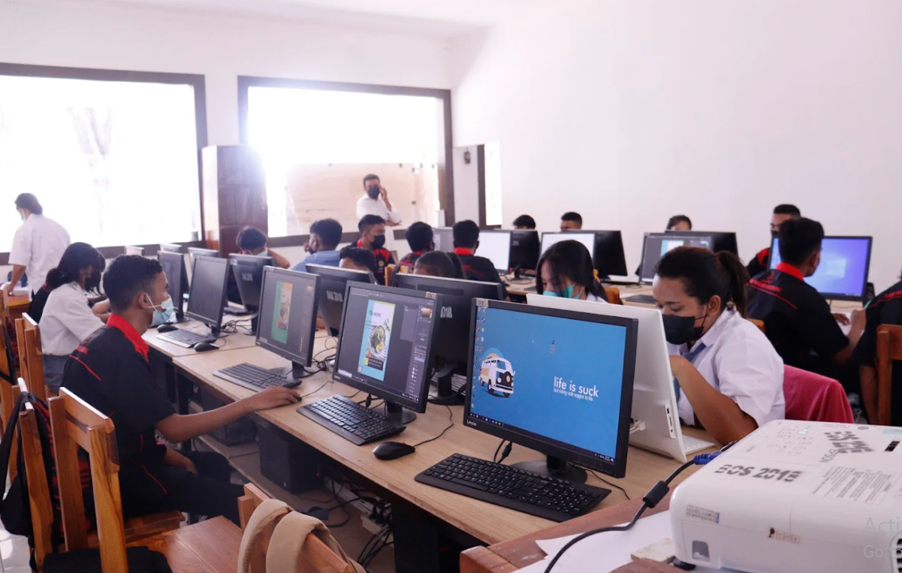
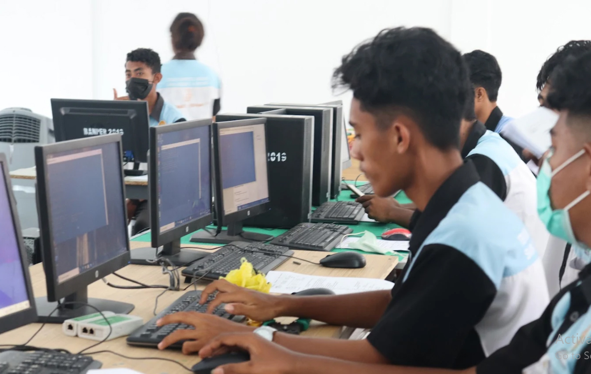
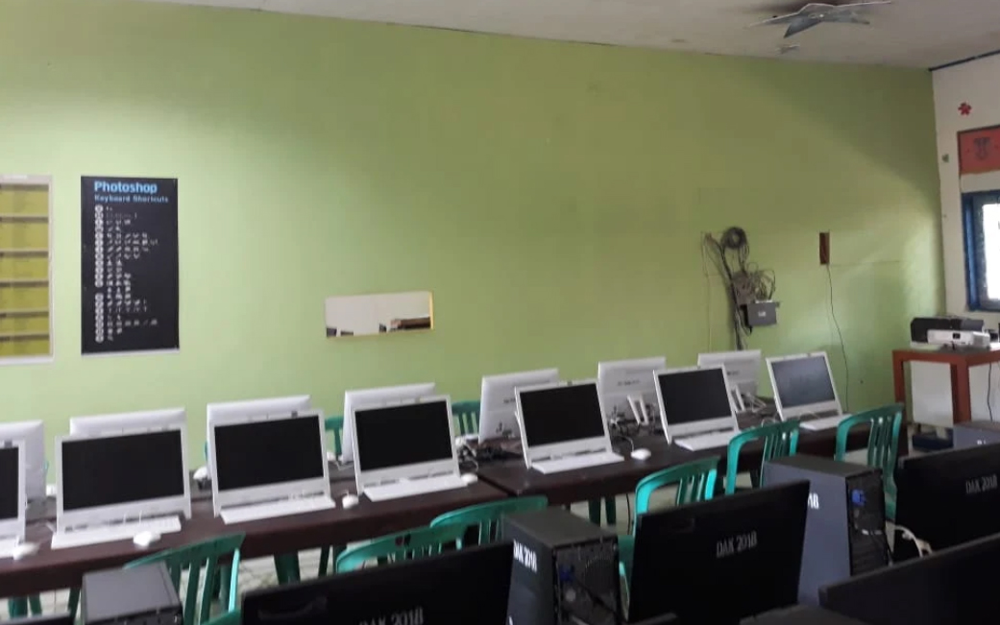
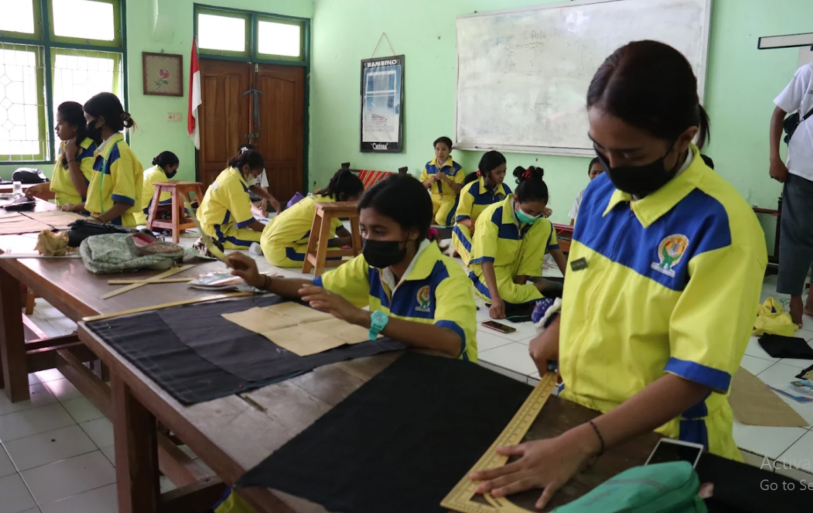
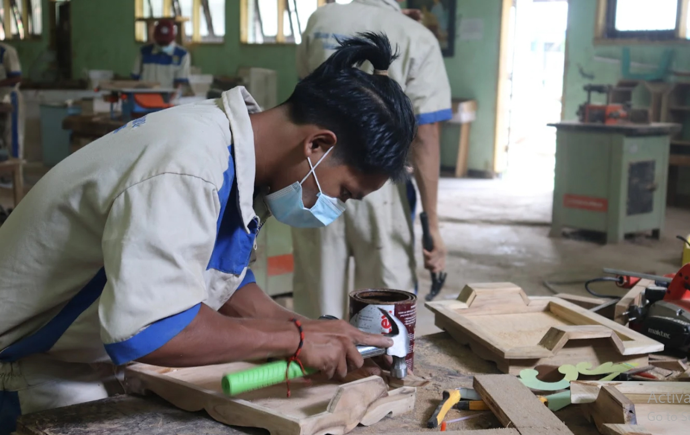

Konsentrasi Keahlian
Program keahlian relevan demi menjamin masa depan karier cemerlang.
Kami menyediakan 5 program Konsentrasi Keahlian spesifik yang
memadukan keahlian teknologi digital masa kini dengan pelestarian
mahakarya kriya kreatif tradisional.
Komunikasi Visual (DKV) - 3 Thn
DKV tidak hanya berfokus pada keindahan visual, tetapi juga pada
strategi komunikasi agar pesan dapat dipahami, diingat, dan mampu
memengaruhi perilaku audiens. Penerapannya mencakup media cetak
(poster, brosur, kemasan, dll) maupun media digital (media sosial,
website, video, dan animasi).
Teknik Komputer dan Jaringan (TKJ) - 3 Thn
Pembelajaran dirancang kontekstual melalui praktik langsung seperti
instalasi dan konfigurasi jaringan, administrasi server, keamanan
sistem, hingga pengenalan teknologi terkini. Pendekatan deep learning
mendorong siswa berpikir kritis, kreatif, dan reflektif, sehingga
mampu memahami materi secara menyeluruh, bukan sekadar hafalan.
Desain Interior & Teknik Furnitur (DITF) - 4 Thn
Pembelajaran berfokus pada penerapan Kurikulum Merdeka berbasis deep
learning berfokus pada pengembangan kemampuan merancang ruang dan
produk furnitur yang fungsional, estetis, serta sesuai kebutuhan
pengguna. Siswa memahami konsep desain, ergonomi, material, hingga
teknik produksi furnitur secara menyeluruh. Pembelajaran dilakukan
secara kontekstual dan berbasis proyek, terlibat langsung dalam proses
riset kebutuhan pengguna, pembuatan konsep desain, visualisasi (sketsa
dan digital), hingga pembuatan produk nyata.
Kriya Kreatif Batik dan Tekstil (KKBT) - 3 Thn
Studi Kriya Kreatif Batik dan Tekstil di Sekolah Menengah Kejuruan
dengan penerapan Kurikulum Merdeka berbasis *deep learning* berfokus
pada pengembangan keterampilan mencipta karya tekstil yang kreatif,
inovatif, dan bernilai budaya. Siswa dibekali kompetensi mulai dari
pengenalan bahan dan alat, teknik batik (tulis, cap, dan kombinasi),
pewarnaan, hingga pengolahan berbagai produk tekstil.
Kriya Kreatif Kayu dan Rotan (KKKR) - 3 Thn
Menerapan Kurikulum Merdeka berbasis *deep learning* berfokus pada
pengembangan keterampilan mengolah bahan kayu dan rotan menjadi produk
kriya yang fungsional, estetis, dan bernilai ekonomi. Siswa dibekali
kompetensi mulai dari pemahaman material, teknik kerja bangku dan
mesin, teknik ukir, hingga proses finishing produk. Pembelajaran
dilakukan secara kontekstual dan berbasis proyek, di mana siswa
terlibat langsung dalam proses perancangan, pembuatan, hingga
penyempurnaan produk kriya sesuai kebutuhan pasar dan potensi lokal.
Pendekatan *deep learning* mendorong siswa berpikir kritis, kreatif,
dan reflektif, sehingga mampu menghasilkan karya yang tidak hanya
berkualitas, tetapi juga memiliki identitas dan nilai budaya.

Desain Komunikasi Visual (3 Thn)

Teknik Komputer Jaringan (3 Thn)

Teknik Furnitur (4 Thn)

Kriya Kreatif Batik & Tekstil (3 Thn)

Kriya Kreatif Kayu & Rotan (3 Thn)